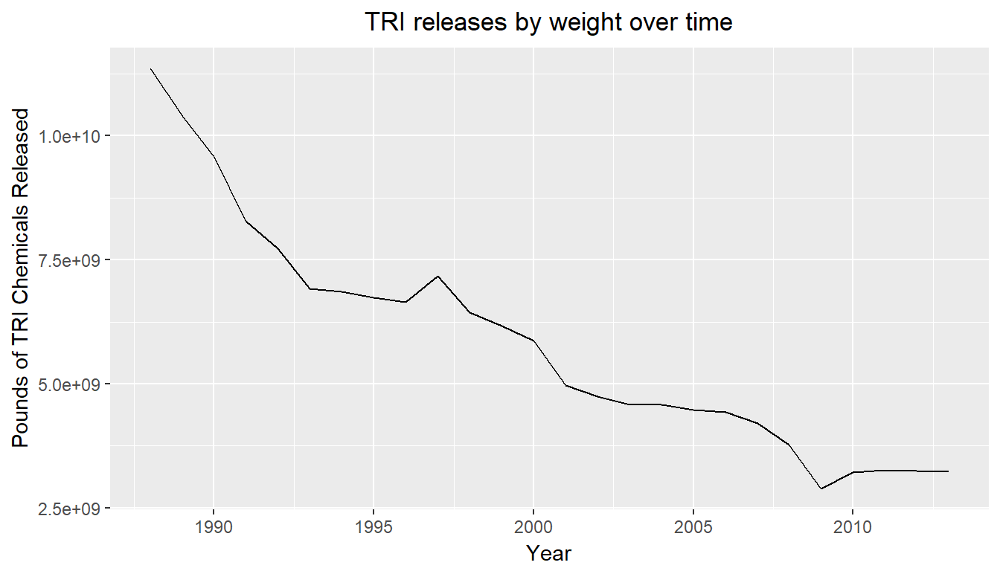
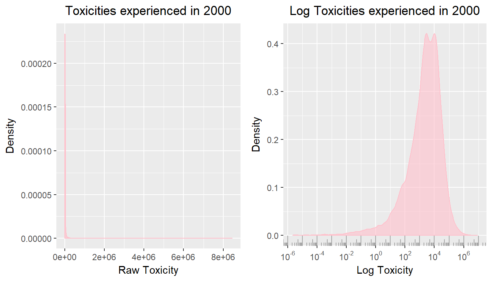

Chapter 4 General Trends
4.1 Toxicity Trends
Spurred by fear created by a disaster release of toxic chemicals in India, the Community Right to Know Act was created in 1986 to enforce reporting on hazardous chemicals being realeased in to the environment by individual facilities. TRI data, beginning in 1988, is the public release of the data created through the Community Right to Know Act.
The time after TRI began collection included a lot of environmental regulation, including the Montreal Protol, the Clean Air Act Amendments of 1990, the Oil Pollution Act of 1990 and the 1994 Executive Order directing ‘federal agiencies to identify and address the disproportionately high … environmental effects … on minority populations.’ (Executive Order, 1994) As more and more environmental protections went in to place and collective environmental attitudes became greener, we expect to see large drops in toxicity experienced by all groups. The early 1990’s enforced mandated phase outs of certain CFC’s and requirements for facilities to switch to Best Available Control Technology (BACT), so there should be large drops in toxicity.

Looking at the net volume of TRI releases, we do see a fairly linear drop in the pounds of TRI chemicals being released nationally between 1988 and 2013. Despite the common use of volume of TRI releases as a study measure (SOURCES) the rest of this work proceeds to use TRI toxicity as the measure of interest. TRI toxicity refers to the weight of each release multiplied by the toxicity weight assigned to the chemical by the EPA. Given that TRI chemicals vary significantly in their potential human effects, toxicity experienced is a better measure of the potential human impact than the net weight of toxic chemicals experienced. Given that this seeks to find differences in pollution experienced by minority groups, toxicicty is even more important, as there is potential that more toxic releases are focused in minority communities, which would not be evident by net weight.
Toxicity trends look very different than the net release trends shown above. This is partially attributable to the strongly skewed distribution of toxicity. As some releases are of extremely toxic chemicals, the distribution of toxicities experienced is extremely right skewed by toxic dumps.

Given the extremely right skewed nature of this distribution, for ease of analysis and interpretation, from here on toxicity is reported as log toxicity. The distributions of log toxicity are much more interpretable, but care must be used to contextualize the results.
In this application, there are locations that are orders of magnitude more toxic than the bulk of the United States. These are sites to be aware of, where toxicity is more likely to have an effect on people’s lives or health. As discussed in the data section, toxicity measures don’t necessarily align with the locations that we know are truly hazardous.
Many of the locations that arise as especially toxic in the data are assuredly so. High Point, NC is consistently one of the most toxic tracts in the early 2000’s, as confirmed by EPA reports identifying it as a location prime for testing toxicity abatement measures. Tracts outside of Salt Lake City commonly known for acting as dumping grounds are consistently ranked as toxic in the early 2000’s. Mobile, AL, whose 3 superfund sites were proposed in the early 1990’s, routinely ranks as toxic over that time period.
On the other side of the coin, there are many known toxic events and locations that fail to ever reach the top 5% of toxic tracts, of which Flint, MI, and the Houston major superfund site are good examples.
4.2 Geography of Toxicity Trends
Toxic exposure has been changing dramatically in the US, but the trends it follows have remained similar. In the gif below, we show toxicity across the US from 2010 to 2014.

GIF of toxicity in America from 2010 to 2014.
Though we see impressive reductions over that time, the overall geographic trends of toxicity remain constant. Each region maintains its overall toxicity range, and toxicity wells appear to stay constant. Given the infrastructure required to build up manufacturing, a large part of TRI, the consistency across time is reasonable.
The toxicity wells we see in the image are familiar, as many of them occur around large cities, where there is likely to be industry. Though many large cities stand out as having high toxicity, there’s not a one to one correlation between areas of high toxicity and population density. As an example, in Texas, Houston and San Antonio have high toxicity values, while the Dallas/Fort has fairly low toxictiy. Comparatively, the more rural areas of Longview and Tyler are very high toxicity.
Regions that stand out the most include the northern border of Kentucky, the regions surrounding Chicago, the border between New Jersey and Pennsylvania, and the westernmost section of the gulf coast.
A closer view of the Texan region of the gulf coast is shown below.

GIF of toxicity in America from 2010 to 2014.
Over the 1990-2013 period, we see an incredible reduction of toxicity in the Dallas/Fort Worth area, going from an area with a large center of extremely high toxicity, to mid range toxicity. Much of this improvement happens before 2000, where we see the area of 15,000+ toxicity drastically reduce in size. Despite a large overall reduction, the areas with the most sustained high toxicity are Houston, Longview and Beaumont. Some larger citites, like San Antonio, Austin and El Paso show much lower toxicity levels by 2013.